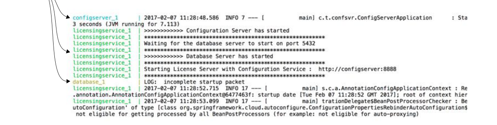

Cả ba dịch vụ đều đang ghi đầu ra ra console.

Mọi đầu ra từ các container Docker đã khởi động đều được ghi vào standard out.
Tất cả các container Docker được dùng trong cuốn sách này đều là tạm thời (ephemeral)—chúng sẽ không giữ trạng thái khi được khởi động và dừng. Hãy ghi nhớ điều này nếu bạn bắt đầu thử nghiệm mã và thấy dữ liệu biến mất sau khi khởi động lại các container. Nếu bạn muốn làm cho cơ sở dữ liệu Postgres bền vững giữa các lần khởi động và dừng container, tôi khuyên bạn xem ghi chú Postgres trên Docker (https://hub.docker.com/_/postgres/).